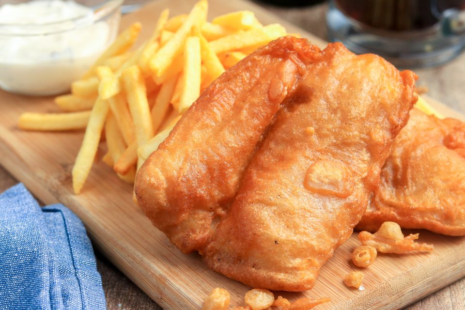

Back
Jump to Recipe
Golden Fried Fish and Chips

Description
A classic English pub fare, Fish and Chips golden fried, served with cripsy chips and tartar sauce, if you so please.
Ingredients:
For the Fish:
- 7 tbsp (55 grams) all-purpose flour, divided
- 7 tbsp (55 grams) cornstarch
- 1 tsp baking powder
- Sea salt, to taste
- 1 pinch freshly ground black pepper, to taste
- 1/3 cup dark beer, cold
- 4 (7oz) fish fillets (thick, white fish)
For the Chips:
- 2 pounds potatoes, peeled
- 1 quart (1 liter) vegetable oil, or lard, for frying
Steps
- Using paper towels, pat both sides of the steak dry; season generously with 1 1/4 teaspoons salt and 1/2 teaspoon pepper.
- Heat a medium cast iron skillet over medium high heat until very hot, about 1-2 minutes; add canola oil.
- Place the steak in the middle of the skillet and cook, turning every 2-3 minutes, until a dark crust has formed on both sides, about 12-14 minutes.
- Reduce heat to medium low. Push steak to one side of the skillet; add butter, garlic, thyme and rosemary to opposite side of the skillet, tilting the skillet towards the butter and cooking until butter is foaming, about 30 seconds to 1 minute.
- Working carefully, spoon butter over steak for 1-2 minutes, turning over once, until it reaches an internal temperature of 120 degrees F for medium rare, or until desired doneness. Let rest 15 minutes before slicing.
- Serve immediately.
Back to the Top